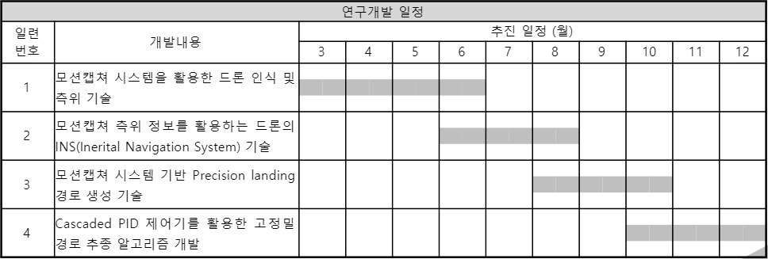

POSTECH ICT V+ 4.0 매칭 기업 ISON 2021-05-10 Drone Controller Design (2)
ISON 개발 관련 목차
- 2021-03-02 ISON Meeting
- 2021-03-24 ISON Meeting
- 2021-04-07 ISON Development: Error-State Kalman Filter_1
- 2021-04-07 ISON Development: Error-State Kalman Filter_2
- 2021-04-26 ISON Development: Drone System Implementation
- 2021-05-10 ISON Development: Drone Control (1)
- 2021-06-10 ISON Development: Drone Control (2)
- 2021-07-23 ISON Internship
15주차, 드론 동역학 및 제어기 설계 2 (21.05.24~21.06.04)
이번 15주 차에서는 아래 추진일정에 따라 모션 캡쳐 시스템을 활용한 드론 인식 및 측위 기술 개발에 관련한 내용을 포스팅한다.
지난 11주 차 포스팅에서 드론 H/W를 제작하였다. 그리고 13주 차 포스팅에서는 드론 동역학을 이해해 보았다. 이제는 제작한 드론을 제어하기 위한 제어 S/W가 드론에 탑재되어야 한다. 드론 동역학 설명을 시작으로 드론 FC (Flight Controller)에 탑재될 제어기가 왜 이렇게 구성되었는지에 대한 내용을 전달한다.
또, 차주에 진행될 Open Class 발표를 준비한다.

- 드론 제어기
13주 차 포스팅에서 설명한 드론 Dynamics를 기반으로 실제 드론을 제어하기 위해서는 제어기가 필요하다. 그러나 실제에 바로 제어기를 갖추어 테스트를 해보기에는 위험부담이 상당하여, 보통은 Simulation을 통해서 제어기의 성능을 검증하고 후에 Firmware로 구현하여 드론 Flight Controller에 다운로드하는 것이 통상적인 순서이다.
우리 팀 또한 그 절차를 따라서, 먼저 MATLAB을 통해 사전에 3D 모델링 툴로 모델링 한 드론을 제어해보고자 하였다.

위 사진은 전체적인 제어기의 모습이다 최종 출력으로 드론의 각 모터의 회전속도에 대한 PWM 신호가 발생하도록 하였다.

포스팅은 위 사진과 같이 1번 2번으로 구분해서 진행하도록 하겠다! 먼저 1번 제어기를 살펴보자.

위 그림에서 에서 (5, Ref) 노드를 통해서 우리가 원하는 $(x,y,z,\psi)$입력이 들어온다. 이후 Demux와 Mux를 이용하여 $(x,y),z,\psi$로 Tuple을 생성한다. (4, P) 노드를 통해서는 현재 $(x,y,z)$가 들어와서 Ref와의 차이(desired)를 계산하고 계산한 차이를 P 제어기 그리고 PID 제어기를 순서대로 통과하며 최종적으로 $\ddot{p}_{d}$을 만든다.
이후 제어기를 통해서 얻어낸 와 $\psi,\eta$를 p2dot to desiredEta&desiredp2dot Fuction에 입력으로 제공하여, refEta와 desoredp2dot을 얻어낸다. 자세한 내용은 아래와 같다.
where $\psi$ from $\eta$ (2, Eta) 노드
다음은 2번에 해당하는 내용이다.

2번에서는 이전에 얻어낸 $\eta_r$을 이용하여 Body Frame에서의 각속도 $w$를 얻어낼 차례이다.
$\eta_r$을 P 제어기에 통과시켜 $\dot{\eta_r}$을 얻어내고
아래와 같이 $C$ matrix를 이용하여 $w$를 구할 수 있다. 이 과정을 담당하는 것이 Euler1dot to Omega 블럭이다.
이후 $w$ (1, Omega)노드의 값을 이용해 $w_d$를 만들고 PID 제어기를 통과시켜 $\dot{w}_{d}$을 얻을 수 있다.
이제, Acceleration to Force&Torque 블럭에 과 그리고 를 입력하여 최종적으로 를 얻어낼 것이다. 이다.
$T = \ddot{z} \cos (\phi )\cos (\theta )m$라고 하자.
그러면 가 된다.
또, 을 얻을 수 있다.
이고,
여기서 $k$는 1/Lift Constant, $b$는 1/Drag Constant이다.
마지막으로 $f_{motor}$를 환산하여 모터에 입력 가능한 PWM 신호로 환산한다.
- 시뮬레이션
3D 모델링 툴을 이용하여 제작한 3D 모델을 시뮬레이터에 얹어 구현한 제어기를 테스트 해보았다. 해당 영상은 아래에 있다.

Position

Euler Angle
영상과 Position, Euler Angle을 나타낸 플랏에도 알 수 있듯이 Reference value에 잘 수렴하고, 드론이 안정적으로 동작하는 것을 확인할 수 있다.